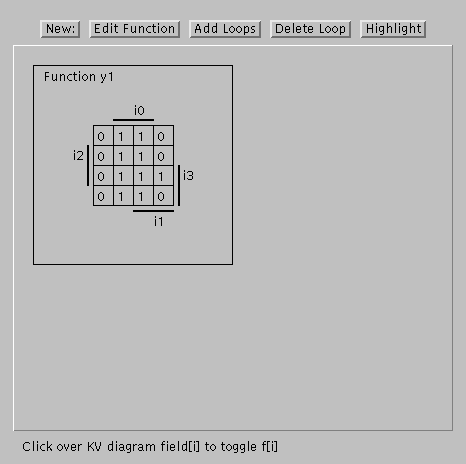
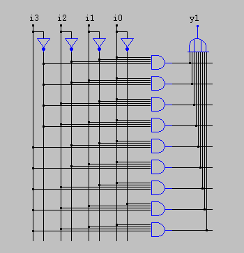
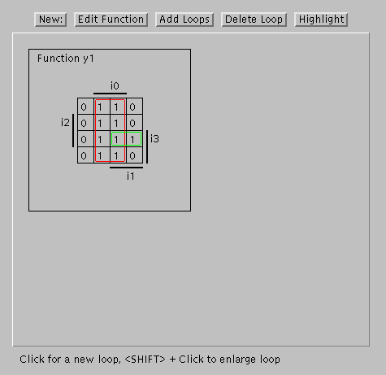
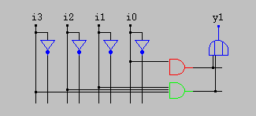

Java KV diagram demonstration - example 1
Before minimization
The following image shows the initial KV diagram and
the corresponding minterm circuit realization of a selected
boolean function:
KV diagram before minimization:

Initial circuit realization:

After minimization
The idea of logic minimization is to find a cheap realization
for a given logic function.
With KV diagrams, one searches and marks loops in the diagram.
Each loop corresponds to a new term that covers some minterms
of the function.
Note how the resulting PLA is much cheaper than the initial
minterm realization!
KV diagram with loops:

Corresponding optimized circuit:

All comments, hints and bug reports are welcome: Please contact
hendrich@informatik.uni-hamburg.de.